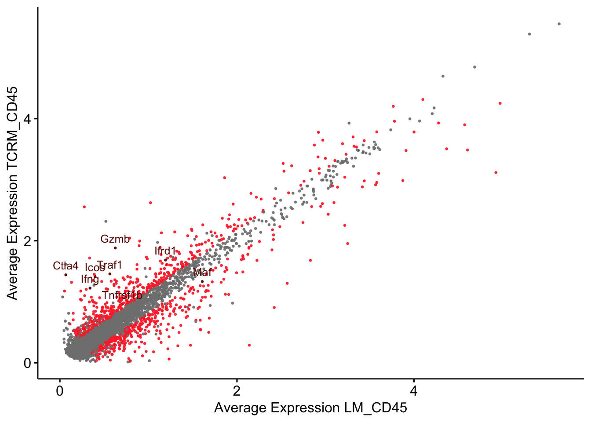

vis CD45+ cells
Mechthild Lütge
29 April 2021
Last updated: 2021-08-27
Checks: 6 1
Knit directory: TCRM_Christina/
This reproducible R Markdown analysis was created with workflowr (version 1.6.2). The Checks tab describes the reproducibility checks that were applied when the results were created. The Past versions tab lists the development history.
The R Markdown file has unstaged changes. To know which version of the R Markdown file created these results, you’ll want to first commit it to the Git repo. If you’re still working on the analysis, you can ignore this warning. When you’re finished, you can run wflow_publish to commit the R Markdown file and build the HTML.
Great job! The global environment was empty. Objects defined in the global environment can affect the analysis in your R Markdown file in unknown ways. For reproduciblity it’s best to always run the code in an empty environment.
The command set.seed(20200518) was run prior to running the code in the R Markdown file. Setting a seed ensures that any results that rely on randomness, e.g. subsampling or permutations, are reproducible.
Great job! Recording the operating system, R version, and package versions is critical for reproducibility.
Nice! There were no cached chunks for this analysis, so you can be confident that you successfully produced the results during this run.
Great job! Using relative paths to the files within your workflowr project makes it easier to run your code on other machines.
Great! You are using Git for version control. Tracking code development and connecting the code version to the results is critical for reproducibility.
The results in this page were generated with repository version 2691b1d. See the Past versions tab to see a history of the changes made to the R Markdown and HTML files.
Note that you need to be careful to ensure that all relevant files for the analysis have been committed to Git prior to generating the results (you can use wflow_publish or wflow_git_commit). workflowr only checks the R Markdown file, but you know if there are other scripts or data files that it depends on. Below is the status of the Git repository when the results were generated:
Ignored files:
Ignored: .DS_Store
Ignored: .Rhistory
Ignored: .Rproj.user/
Ignored: data/data_old/
Ignored: output/.DS_Store
Untracked files:
Untracked: figure/mergeCD45cells.Rmd/GSEA cwDE LM_CD45 ILCs-1.pdf
Untracked: figure/mergeCD45cells.Rmd/GSEA cwDE LM_CD45 ILCs-1.png
Untracked: figure/mergeCD45cells.Rmd/GSEA cwDE LM_CD45 ILCs-2.pdf
Untracked: figure/mergeCD45cells.Rmd/GSEA cwDE LM_CD45 ILCs-2.png
Untracked: figure/mergeCD45cells.Rmd/GSEA cwDE LM_CD45 ILCs-3.pdf
Untracked: figure/mergeCD45cells.Rmd/GSEA cwDE LM_CD45 ILCs-3.png
Untracked: figure/mergeCD45cells.Rmd/GSEA cwDE TCRM_CD45 Basophils-1.pdf
Untracked: figure/mergeCD45cells.Rmd/GSEA cwDE TCRM_CD45 Basophils-1.png
Untracked: figure/mergeCD45cells.Rmd/GSEA cwDE TCRM_CD45 Basophils-2.pdf
Untracked: figure/mergeCD45cells.Rmd/GSEA cwDE TCRM_CD45 Basophils-2.png
Untracked: figure/mergeCD45cells.Rmd/GSEA cwDE TCRM_CD45 Basophils-3.pdf
Untracked: figure/mergeCD45cells.Rmd/GSEA cwDE TCRM_CD45 Basophils-3.png
Untracked: figure/mergeCD45cells.Rmd/GSEA cwDE TCRM_CD45 ILCs-1.pdf
Untracked: figure/mergeCD45cells.Rmd/GSEA cwDE TCRM_CD45 ILCs-1.png
Untracked: figure/mergeCD45cells.Rmd/GSEA cwDE TCRM_CD45 ILCs-2.pdf
Untracked: figure/mergeCD45cells.Rmd/GSEA cwDE TCRM_CD45 ILCs-2.png
Untracked: figure/mergeCD45cells.Rmd/GSEA cwDE TCRM_CD45 ILCs-3.pdf
Untracked: figure/mergeCD45cells.Rmd/GSEA cwDE TCRM_CD45 ILCs-3.png
Untracked: figure/mergeCD45cells.Rmd/avgHeat cwDE Basophils-1.pdf
Untracked: figure/mergeCD45cells.Rmd/avgHeat cwDE Basophils-1.png
Unstaged changes:
Modified: analysis/mergeCD45cells.Rmd
Modified: analysis/pseudotimeAnalysisFibroblasts.Rmd
Modified: analysis/visGrps_CD45Data.Rmd
Modified: figure/mergeCD45cells.Rmd/GSEA cwDE LM_CD45 Bcells-1.pdf
Modified: figure/mergeCD45cells.Rmd/GSEA cwDE LM_CD45 Bcells-1.png
Modified: figure/mergeCD45cells.Rmd/GSEA cwDE LM_CD45 Bcells-2.pdf
Modified: figure/mergeCD45cells.Rmd/GSEA cwDE LM_CD45 Bcells-2.png
Modified: figure/mergeCD45cells.Rmd/GSEA cwDE LM_CD45 Bcells-3.pdf
Modified: figure/mergeCD45cells.Rmd/GSEA cwDE LM_CD45 Bcells-3.png
Modified: figure/mergeCD45cells.Rmd/GSEA cwDE LM_CD45 DCs-1.pdf
Modified: figure/mergeCD45cells.Rmd/GSEA cwDE LM_CD45 DCs-1.png
Modified: figure/mergeCD45cells.Rmd/GSEA cwDE LM_CD45 DCs-2.pdf
Modified: figure/mergeCD45cells.Rmd/GSEA cwDE LM_CD45 DCs-2.png
Modified: figure/mergeCD45cells.Rmd/GSEA cwDE LM_CD45 DCs-3.pdf
Modified: figure/mergeCD45cells.Rmd/GSEA cwDE LM_CD45 DCs-3.png
Modified: figure/mergeCD45cells.Rmd/GSEA cwDE LM_CD45 MacrophagesMonocytes-1.pdf
Modified: figure/mergeCD45cells.Rmd/GSEA cwDE LM_CD45 MacrophagesMonocytes-1.png
Modified: figure/mergeCD45cells.Rmd/GSEA cwDE LM_CD45 MacrophagesMonocytes-2.pdf
Modified: figure/mergeCD45cells.Rmd/GSEA cwDE LM_CD45 MacrophagesMonocytes-2.png
Modified: figure/mergeCD45cells.Rmd/GSEA cwDE LM_CD45 MacrophagesMonocytes-3.pdf
Modified: figure/mergeCD45cells.Rmd/GSEA cwDE LM_CD45 MacrophagesMonocytes-3.png
Modified: figure/mergeCD45cells.Rmd/GSEA cwDE LM_CD45 NKcells-1.pdf
Modified: figure/mergeCD45cells.Rmd/GSEA cwDE LM_CD45 NKcells-1.png
Modified: figure/mergeCD45cells.Rmd/GSEA cwDE LM_CD45 NKcells-2.pdf
Modified: figure/mergeCD45cells.Rmd/GSEA cwDE LM_CD45 NKcells-2.png
Modified: figure/mergeCD45cells.Rmd/GSEA cwDE LM_CD45 NKcells-3.pdf
Modified: figure/mergeCD45cells.Rmd/GSEA cwDE LM_CD45 NKcells-3.png
Modified: figure/mergeCD45cells.Rmd/GSEA cwDE LM_CD45 Neutrophils-1.pdf
Modified: figure/mergeCD45cells.Rmd/GSEA cwDE LM_CD45 Neutrophils-1.png
Modified: figure/mergeCD45cells.Rmd/GSEA cwDE LM_CD45 Neutrophils-2.pdf
Modified: figure/mergeCD45cells.Rmd/GSEA cwDE LM_CD45 Neutrophils-2.png
Modified: figure/mergeCD45cells.Rmd/GSEA cwDE LM_CD45 Neutrophils-3.pdf
Modified: figure/mergeCD45cells.Rmd/GSEA cwDE LM_CD45 Neutrophils-3.png
Modified: figure/mergeCD45cells.Rmd/GSEA cwDE LM_CD45 Tcells-1.pdf
Modified: figure/mergeCD45cells.Rmd/GSEA cwDE LM_CD45 Tcells-1.png
Modified: figure/mergeCD45cells.Rmd/GSEA cwDE LM_CD45 Tcells-2.pdf
Modified: figure/mergeCD45cells.Rmd/GSEA cwDE LM_CD45 Tcells-2.png
Modified: figure/mergeCD45cells.Rmd/GSEA cwDE LM_CD45 Tcells-3.pdf
Modified: figure/mergeCD45cells.Rmd/GSEA cwDE LM_CD45 Tcells-3.png
Modified: figure/mergeCD45cells.Rmd/GSEA cwDE LM_CD45 proliferating-1.pdf
Modified: figure/mergeCD45cells.Rmd/GSEA cwDE LM_CD45 proliferating-1.png
Modified: figure/mergeCD45cells.Rmd/GSEA cwDE LM_CD45 proliferating-2.pdf
Modified: figure/mergeCD45cells.Rmd/GSEA cwDE LM_CD45 proliferating-2.png
Modified: figure/mergeCD45cells.Rmd/GSEA cwDE LM_CD45 proliferating-3.pdf
Modified: figure/mergeCD45cells.Rmd/GSEA cwDE LM_CD45 proliferating-3.png
Modified: figure/mergeCD45cells.Rmd/GSEA cwDE TCRM_CD45 Bcells-1.pdf
Modified: figure/mergeCD45cells.Rmd/GSEA cwDE TCRM_CD45 Bcells-1.png
Modified: figure/mergeCD45cells.Rmd/GSEA cwDE TCRM_CD45 Bcells-2.pdf
Modified: figure/mergeCD45cells.Rmd/GSEA cwDE TCRM_CD45 Bcells-2.png
Modified: figure/mergeCD45cells.Rmd/GSEA cwDE TCRM_CD45 Bcells-3.pdf
Modified: figure/mergeCD45cells.Rmd/GSEA cwDE TCRM_CD45 Bcells-3.png
Modified: figure/mergeCD45cells.Rmd/GSEA cwDE TCRM_CD45 DCs-1.pdf
Modified: figure/mergeCD45cells.Rmd/GSEA cwDE TCRM_CD45 DCs-1.png
Modified: figure/mergeCD45cells.Rmd/GSEA cwDE TCRM_CD45 DCs-2.pdf
Modified: figure/mergeCD45cells.Rmd/GSEA cwDE TCRM_CD45 DCs-2.png
Modified: figure/mergeCD45cells.Rmd/GSEA cwDE TCRM_CD45 DCs-3.pdf
Modified: figure/mergeCD45cells.Rmd/GSEA cwDE TCRM_CD45 DCs-3.png
Modified: figure/mergeCD45cells.Rmd/GSEA cwDE TCRM_CD45 MacrophagesMonocytes-1.pdf
Modified: figure/mergeCD45cells.Rmd/GSEA cwDE TCRM_CD45 MacrophagesMonocytes-1.png
Modified: figure/mergeCD45cells.Rmd/GSEA cwDE TCRM_CD45 MacrophagesMonocytes-2.pdf
Modified: figure/mergeCD45cells.Rmd/GSEA cwDE TCRM_CD45 MacrophagesMonocytes-2.png
Modified: figure/mergeCD45cells.Rmd/GSEA cwDE TCRM_CD45 MacrophagesMonocytes-3.pdf
Modified: figure/mergeCD45cells.Rmd/GSEA cwDE TCRM_CD45 MacrophagesMonocytes-3.png
Modified: figure/mergeCD45cells.Rmd/GSEA cwDE TCRM_CD45 NKcells-1.pdf
Modified: figure/mergeCD45cells.Rmd/GSEA cwDE TCRM_CD45 NKcells-1.png
Modified: figure/mergeCD45cells.Rmd/GSEA cwDE TCRM_CD45 NKcells-2.pdf
Modified: figure/mergeCD45cells.Rmd/GSEA cwDE TCRM_CD45 NKcells-2.png
Modified: figure/mergeCD45cells.Rmd/GSEA cwDE TCRM_CD45 NKcells-3.pdf
Modified: figure/mergeCD45cells.Rmd/GSEA cwDE TCRM_CD45 NKcells-3.png
Modified: figure/mergeCD45cells.Rmd/GSEA cwDE TCRM_CD45 Neutrophils-1.pdf
Modified: figure/mergeCD45cells.Rmd/GSEA cwDE TCRM_CD45 Neutrophils-1.png
Modified: figure/mergeCD45cells.Rmd/GSEA cwDE TCRM_CD45 Neutrophils-2.pdf
Modified: figure/mergeCD45cells.Rmd/GSEA cwDE TCRM_CD45 Neutrophils-2.png
Modified: figure/mergeCD45cells.Rmd/GSEA cwDE TCRM_CD45 Neutrophils-3.pdf
Modified: figure/mergeCD45cells.Rmd/GSEA cwDE TCRM_CD45 Neutrophils-3.png
Modified: figure/mergeCD45cells.Rmd/GSEA cwDE TCRM_CD45 Tcells-1.pdf
Modified: figure/mergeCD45cells.Rmd/GSEA cwDE TCRM_CD45 Tcells-1.png
Modified: figure/mergeCD45cells.Rmd/GSEA cwDE TCRM_CD45 Tcells-2.pdf
Modified: figure/mergeCD45cells.Rmd/GSEA cwDE TCRM_CD45 Tcells-2.png
Modified: figure/mergeCD45cells.Rmd/GSEA cwDE TCRM_CD45 Tcells-3.pdf
Modified: figure/mergeCD45cells.Rmd/GSEA cwDE TCRM_CD45 Tcells-3.png
Modified: figure/mergeCD45cells.Rmd/GSEA cwDE TCRM_CD45 proliferating-1.pdf
Modified: figure/mergeCD45cells.Rmd/GSEA cwDE TCRM_CD45 proliferating-1.png
Modified: figure/mergeCD45cells.Rmd/GSEA cwDE TCRM_CD45 proliferating-2.pdf
Modified: figure/mergeCD45cells.Rmd/GSEA cwDE TCRM_CD45 proliferating-2.png
Modified: figure/mergeCD45cells.Rmd/GSEA cwDE TCRM_CD45 proliferating-3.pdf
Modified: figure/mergeCD45cells.Rmd/GSEA cwDE TCRM_CD45 proliferating-3.png
Modified: figure/mergeCD45cells.Rmd/avgHeat cwDE Bcells-1.pdf
Modified: figure/mergeCD45cells.Rmd/avgHeat cwDE Bcells-1.png
Modified: figure/mergeCD45cells.Rmd/avgHeat cwDE DCs-1.pdf
Modified: figure/mergeCD45cells.Rmd/avgHeat cwDE DCs-1.png
Modified: figure/mergeCD45cells.Rmd/avgHeat cwDE ILCs-1.pdf
Modified: figure/mergeCD45cells.Rmd/avgHeat cwDE ILCs-1.png
Modified: figure/mergeCD45cells.Rmd/avgHeat cwDE MacrophagesMonocytes-1.pdf
Modified: figure/mergeCD45cells.Rmd/avgHeat cwDE MacrophagesMonocytes-1.png
Modified: figure/mergeCD45cells.Rmd/avgHeat cwDE NKcells-1.pdf
Modified: figure/mergeCD45cells.Rmd/avgHeat cwDE NKcells-1.png
Modified: figure/mergeCD45cells.Rmd/avgHeat cwDE Neutrophils-1.pdf
Modified: figure/mergeCD45cells.Rmd/avgHeat cwDE Neutrophils-1.png
Modified: figure/mergeCD45cells.Rmd/avgHeat cwDE Tcells-1.pdf
Modified: figure/mergeCD45cells.Rmd/avgHeat cwDE Tcells-1.png
Modified: figure/mergeCD45cells.Rmd/avgHeat cwDE proliferating-1.pdf
Modified: figure/mergeCD45cells.Rmd/avgHeat cwDE proliferating-1.png
Modified: metadata_lymphcytes.txt
Note that any generated files, e.g. HTML, png, CSS, etc., are not included in this status report because it is ok for generated content to have uncommitted changes.
These are the previous versions of the repository in which changes were made to the R Markdown (analysis/visGrps_CD45Data.Rmd) and HTML (docs/visGrps_CD45Data.html) files. If you’ve configured a remote Git repository (see ?wflow_git_remote), click on the hyperlinks in the table below to view the files as they were in that past version.
| File | Version | Author | Date | Message |
|---|---|---|---|---|
| Rmd | 2691b1d | mluetge | 2021-06-25 | add fibroblast pseudotime ordering and vis cd45 cells |
| html | 2691b1d | mluetge | 2021-06-25 | add fibroblast pseudotime ordering and vis cd45 cells |
| Rmd | 4091b70 | mluetge | 2021-06-24 | vis grp differences CD45 cells |
| html | 4091b70 | mluetge | 2021-06-24 | vis grp differences CD45 cells |
load packages
suppressPackageStartupMessages({
library(SingleCellExperiment)
library(tidyverse)
library(Seurat)
library(magrittr)
library(dplyr)
library(purrr)
library(ggplot2)
library(here)
library(runSeurat3)
library(ggsci)
library(ggpubr)
library(pheatmap)
})load data
basedir <- here()
seurat <- readRDS(file = paste0(basedir,
"/data/Mu_Heart_TCRMplusLM_CD45_seurat.rds"))color vectors
colPal <- pal_igv()(length(levels(seurat)))
colGrp <- pal_jama()(length(unique(seurat$grp)))
colSmp <- pal_uchicago()(length(unique(seurat$dataset)))
colLab <- pal_futurama()(length(unique(seurat$clusterLabel)))
names(colPal) <- levels(seurat)
names(colGrp) <- unique(seurat$grp)
names(colSmp) <- unique(seurat$dataset)
names(colLab) <- unique(seurat$clusterLabel)vis data
clusters
DimPlot(seurat, reduction = "umap", cols=colPal)+
theme_bw() +
theme(axis.text = element_blank(), axis.ticks = element_blank(),
panel.grid.minor = element_blank()) +
xlab("UMAP1") +
ylab("UMAP2")
| Version | Author | Date |
|---|---|---|
| 4091b70 | mluetge | 2021-06-24 |
group
DimPlot(seurat, reduction = "umap", group.by = "grp", cols=colGrp)+
theme_bw() +
theme(axis.text = element_blank(), axis.ticks = element_blank(),
panel.grid.minor = element_blank()) +
xlab("UMAP1") +
ylab("UMAP2")
| Version | Author | Date |
|---|---|---|
| 4091b70 | mluetge | 2021-06-24 |
label
DimPlot(seurat, reduction = "umap", group.by = "clusterLabel", cols=colLab)+
theme_bw() +
theme(axis.text = element_blank(), axis.ticks = element_blank(),
panel.grid.minor = element_blank()) +
xlab("UMAP1") +
ylab("UMAP2")
| Version | Author | Date |
|---|---|---|
| 4091b70 | mluetge | 2021-06-24 |
compare TCRM vs LM activation marker
selGenesDat <- data.frame(gene=c("Tnfrsf1b", "Gzmb", "Ifrd1", "Areg", "Icos",
"Traf1", "Ctla4", "Maf", "Il17a", "Ifng"))DotPlot
color by grp
genes <- data.frame(ensID=rownames(seurat)) %>%
mutate(gene=gsub("^.*\\.", "", ensID))
selGenes <- selGenesDat %>%
left_join(., genes, by="gene")
Idents(seurat) <- seurat$label_plus_cond
clusterDat <- data.frame(ident=levels(seurat)) %>%
mutate(label=gsub("_.*$", "", ident)) %>%
mutate(grp= gsub("^.*_", "", ident))
Idents(seurat) <- seurat$clusterLabel
DotPlot(seurat, assay="RNA", features = selGenes$ensID, split.by = "grp",
cols = colGrp, col.max = 6) +
coord_flip() +
theme(axis.text.x = element_text(angle = 90, hjust = 1)) +
scale_x_discrete(breaks=selGenes$ensID, labels=selGenes$gene) +
scale_y_discrete(breaks=clusterDat$ident, labels=clusterDat$label) +
xlab("") + ylab("")
| Version | Author | Date |
|---|---|---|
| 4091b70 | mluetge | 2021-06-24 |
color by expression
Idents(seurat) <- seurat$label_plus_cond
DotPlot(seurat, assay="RNA", features = selGenes$ensID, scale =T) +
scale_color_viridis_c() +
coord_flip() +
theme(axis.text.x = element_text(angle = 90, hjust = 1)) +
scale_x_discrete(breaks=selGenes$ensID, labels=selGenes$gene) +
xlab("") + ylab("")
| Version | Author | Date |
|---|---|---|
| 4091b70 | mluetge | 2021-06-24 |
color by expression adapt dot size
Idents(seurat) <- seurat$label_plus_cond
DotPlot(seurat, assay="RNA", features = selGenes$ensID, scale =T, dot.scale =10,
scale.max = 50) +
scale_color_viridis_c() +
coord_flip() +
theme(axis.text.x = element_text(angle = 90, hjust = 1)) +
scale_x_discrete(breaks=selGenes$ensID, labels=selGenes$gene) +
xlab("") + ylab("")
| Version | Author | Date |
|---|---|---|
| 2691b1d | mluetge | 2021-06-25 |
Scatterplot
Function
pScatter <- function(seuratObj, DEgenes, genesLab=NULL, titleNam=NULL){
avg.allID <- AverageExpression(seuratObj, show.progress = FALSE)
avg.allID <- as.data.frame(log1p(avg.allID$RNA)) %>%
rownames_to_column(var="gene")
## expression frequency
GeneFreqSel <- as.data.frame(GetAssayData(seuratObj, assay = "RNA",
slot = "data")) %>%
tibble::rownames_to_column(var="gene") %>% mutate(count=rowSums(.!=0)-1) %>%
mutate(countFreq=count/ncol(seuratObj)) %>% select(gene,count, countFreq) %>%
dplyr::filter(countFreq>=0.1)
# colour significant genes with logFC>0.25 and adj_pVal < 0.01
signGenes <- DEgenes %>%
dplyr::filter(p_val_adj<0.01 & (avg_log2FC > 0.25 | avg_log2FC < -0.25))
## label selected genes
if(is.null(genesLab)){
genesLab <- DEgenes %>% top_n(., 30, avg_log2FC) %>%
mutate(labelNam = gsub("^.*\\.", "", gene))
}
genes.to.label = genesLab$labelNam
avg.allID <- avg.allID %>% mutate(labelNam=gsub("^.*\\.", "", gene)) %>%
mutate(colourGrp=ifelse(labelNam %in% genes.to.label, "lab",
ifelse(gene%in%signGenes$gene, "sig", "notSig"))) %>%
dplyr::filter(gene%in%GeneFreqSel$gene)
cond1 <- levels(seuratObj)[1]
cond2 <- levels(seuratObj)[2]
p_allID <- ggscatter(avg.allID, x=cond1, y=cond2,
color = "colourGrp",
#fill = "colourGrp",
palette = c("#660000", "#808080", "#FF3333"),
label="labelNam",
label.select = genes.to.label,
repel = F,
label.rectangle=F,
xlab=paste0("Average Expression ", cond1),
ylab = paste0("Average Expression ", cond2),
title=titleNam,
legend="none",
font.label=10,
alpha=0.9,
#xlim = c(0, 5),
#ylim = c(0, 5),
size=0.5)
p_allID
}plot genes
Idents(seurat) <- seurat$grp
colnames(selGenes)[1] <- "labelNam"
DEgenes <- FindAllMarkers(object = seurat, assay ="RNA",
only.pos = TRUE, min.pct = 0.25,
logfc.threshold = 0.25,
test.use = "wilcox")
pOut <- pScatter(seuratObj = seurat, DEgenes = DEgenes, genesLab=selGenes)
pOut
| Version | Author | Date |
|---|---|---|
| 4091b70 | mluetge | 2021-06-24 |
session info
sessionInfo()R version 4.1.0 (2021-05-18)
Platform: x86_64-apple-darwin17.0 (64-bit)
Running under: macOS Catalina 10.15.7
Matrix products: default
BLAS: /Library/Frameworks/R.framework/Versions/4.1/Resources/lib/libRblas.dylib
LAPACK: /Library/Frameworks/R.framework/Versions/4.1/Resources/lib/libRlapack.dylib
locale:
[1] en_US.UTF-8/en_US.UTF-8/en_US.UTF-8/C/en_US.UTF-8/en_US.UTF-8
attached base packages:
[1] parallel stats4 stats graphics grDevices utils datasets methods base
other attached packages:
[1] pheatmap_1.0.12 ggpubr_0.4.0 ggsci_2.9
[4] runSeurat3_0.1.0 here_1.0.1 magrittr_2.0.1
[7] SeuratObject_4.0.2 Seurat_4.0.3 forcats_0.5.1
[10] stringr_1.4.0 dplyr_1.0.7 purrr_0.3.4
[13] readr_2.0.0 tidyr_1.1.3 tibble_3.1.3
[16] ggplot2_3.3.5 tidyverse_1.3.1 SingleCellExperiment_1.14.1
[19] SummarizedExperiment_1.22.0 Biobase_2.52.0 GenomicRanges_1.44.0
[22] GenomeInfoDb_1.28.1 IRanges_2.26.0 S4Vectors_0.30.0
[25] BiocGenerics_0.38.0 MatrixGenerics_1.4.2 matrixStats_0.60.0
loaded via a namespace (and not attached):
[1] utf8_1.2.2 reticulate_1.20 tidyselect_1.1.1 htmlwidgets_1.5.3
[5] grid_4.1.0 Rtsne_0.15 munsell_0.5.0 codetools_0.2-18
[9] ica_1.0-2 future_1.21.0 miniUI_0.1.1.1 withr_2.4.2
[13] colorspace_2.0-2 highr_0.9 knitr_1.33 rstudioapi_0.13
[17] ROCR_1.0-11 ggsignif_0.6.2 tensor_1.5 listenv_0.8.0
[21] labeling_0.4.2 git2r_0.28.0 GenomeInfoDbData_1.2.6 polyclip_1.10-0
[25] farver_2.1.0 rprojroot_2.0.2 parallelly_1.27.0 vctrs_0.3.8
[29] generics_0.1.0 xfun_0.25 R6_2.5.0 bitops_1.0-7
[33] spatstat.utils_2.2-0 DelayedArray_0.18.0 assertthat_0.2.1 promises_1.2.0.1
[37] scales_1.1.1 gtable_0.3.0 globals_0.14.0 goftest_1.2-2
[41] workflowr_1.6.2 rlang_0.4.11 splines_4.1.0 rstatix_0.7.0
[45] lazyeval_0.2.2 spatstat.geom_2.2-2 broom_0.7.9 yaml_2.2.1
[49] reshape2_1.4.4 abind_1.4-5 modelr_0.1.8 backports_1.2.1
[53] httpuv_1.6.1 tools_4.1.0 ellipsis_0.3.2 spatstat.core_2.3-0
[57] jquerylib_0.1.4 RColorBrewer_1.1-2 ggridges_0.5.3 Rcpp_1.0.7
[61] plyr_1.8.6 zlibbioc_1.38.0 RCurl_1.98-1.3 rpart_4.1-15
[65] deldir_0.2-10 pbapply_1.4-3 cowplot_1.1.1 zoo_1.8-9
[69] haven_2.4.3 ggrepel_0.9.1 cluster_2.1.2 fs_1.5.0
[73] data.table_1.14.0 scattermore_0.7 openxlsx_4.2.4 lmtest_0.9-38
[77] reprex_2.0.1 RANN_2.6.1 whisker_0.4 fitdistrplus_1.1-5
[81] hms_1.1.0 patchwork_1.1.1 mime_0.11 evaluate_0.14
[85] xtable_1.8-4 rio_0.5.27 readxl_1.3.1 gridExtra_2.3
[89] compiler_4.1.0 KernSmooth_2.23-20 crayon_1.4.1 htmltools_0.5.1.1
[93] mgcv_1.8-36 later_1.2.0 tzdb_0.1.2 lubridate_1.7.10
[97] DBI_1.1.1 dbplyr_2.1.1 MASS_7.3-54 Matrix_1.3-4
[101] car_3.0-11 cli_3.0.1 igraph_1.2.6 pkgconfig_2.0.3
[105] foreign_0.8-81 plotly_4.9.4.1 spatstat.sparse_2.0-0 xml2_1.3.2
[109] bslib_0.2.5.1 XVector_0.32.0 rvest_1.0.1 digest_0.6.27
[113] sctransform_0.3.2 RcppAnnoy_0.0.19 spatstat.data_2.1-0 rmarkdown_2.10
[117] cellranger_1.1.0 leiden_0.3.9 uwot_0.1.10 curl_4.3.2
[121] shiny_1.6.0 lifecycle_1.0.0 nlme_3.1-152 jsonlite_1.7.2
[125] carData_3.0-4 limma_3.48.2 viridisLite_0.4.0 fansi_0.5.0
[129] pillar_1.6.2 lattice_0.20-44 fastmap_1.1.0 httr_1.4.2
[133] survival_3.2-11 glue_1.4.2 zip_2.2.0 png_0.1-7
[137] stringi_1.7.3 sass_0.4.0 irlba_2.3.3 future.apply_1.7.0 date()[1] "Fri Aug 27 14:38:14 2021"
sessionInfo()R version 4.1.0 (2021-05-18)
Platform: x86_64-apple-darwin17.0 (64-bit)
Running under: macOS Catalina 10.15.7
Matrix products: default
BLAS: /Library/Frameworks/R.framework/Versions/4.1/Resources/lib/libRblas.dylib
LAPACK: /Library/Frameworks/R.framework/Versions/4.1/Resources/lib/libRlapack.dylib
locale:
[1] en_US.UTF-8/en_US.UTF-8/en_US.UTF-8/C/en_US.UTF-8/en_US.UTF-8
attached base packages:
[1] parallel stats4 stats graphics grDevices utils datasets methods base
other attached packages:
[1] pheatmap_1.0.12 ggpubr_0.4.0 ggsci_2.9
[4] runSeurat3_0.1.0 here_1.0.1 magrittr_2.0.1
[7] SeuratObject_4.0.2 Seurat_4.0.3 forcats_0.5.1
[10] stringr_1.4.0 dplyr_1.0.7 purrr_0.3.4
[13] readr_2.0.0 tidyr_1.1.3 tibble_3.1.3
[16] ggplot2_3.3.5 tidyverse_1.3.1 SingleCellExperiment_1.14.1
[19] SummarizedExperiment_1.22.0 Biobase_2.52.0 GenomicRanges_1.44.0
[22] GenomeInfoDb_1.28.1 IRanges_2.26.0 S4Vectors_0.30.0
[25] BiocGenerics_0.38.0 MatrixGenerics_1.4.2 matrixStats_0.60.0
loaded via a namespace (and not attached):
[1] utf8_1.2.2 reticulate_1.20 tidyselect_1.1.1 htmlwidgets_1.5.3
[5] grid_4.1.0 Rtsne_0.15 munsell_0.5.0 codetools_0.2-18
[9] ica_1.0-2 future_1.21.0 miniUI_0.1.1.1 withr_2.4.2
[13] colorspace_2.0-2 highr_0.9 knitr_1.33 rstudioapi_0.13
[17] ROCR_1.0-11 ggsignif_0.6.2 tensor_1.5 listenv_0.8.0
[21] labeling_0.4.2 git2r_0.28.0 GenomeInfoDbData_1.2.6 polyclip_1.10-0
[25] farver_2.1.0 rprojroot_2.0.2 parallelly_1.27.0 vctrs_0.3.8
[29] generics_0.1.0 xfun_0.25 R6_2.5.0 bitops_1.0-7
[33] spatstat.utils_2.2-0 DelayedArray_0.18.0 assertthat_0.2.1 promises_1.2.0.1
[37] scales_1.1.1 gtable_0.3.0 globals_0.14.0 goftest_1.2-2
[41] workflowr_1.6.2 rlang_0.4.11 splines_4.1.0 rstatix_0.7.0
[45] lazyeval_0.2.2 spatstat.geom_2.2-2 broom_0.7.9 yaml_2.2.1
[49] reshape2_1.4.4 abind_1.4-5 modelr_0.1.8 backports_1.2.1
[53] httpuv_1.6.1 tools_4.1.0 ellipsis_0.3.2 spatstat.core_2.3-0
[57] jquerylib_0.1.4 RColorBrewer_1.1-2 ggridges_0.5.3 Rcpp_1.0.7
[61] plyr_1.8.6 zlibbioc_1.38.0 RCurl_1.98-1.3 rpart_4.1-15
[65] deldir_0.2-10 pbapply_1.4-3 cowplot_1.1.1 zoo_1.8-9
[69] haven_2.4.3 ggrepel_0.9.1 cluster_2.1.2 fs_1.5.0
[73] data.table_1.14.0 scattermore_0.7 openxlsx_4.2.4 lmtest_0.9-38
[77] reprex_2.0.1 RANN_2.6.1 whisker_0.4 fitdistrplus_1.1-5
[81] hms_1.1.0 patchwork_1.1.1 mime_0.11 evaluate_0.14
[85] xtable_1.8-4 rio_0.5.27 readxl_1.3.1 gridExtra_2.3
[89] compiler_4.1.0 KernSmooth_2.23-20 crayon_1.4.1 htmltools_0.5.1.1
[93] mgcv_1.8-36 later_1.2.0 tzdb_0.1.2 lubridate_1.7.10
[97] DBI_1.1.1 dbplyr_2.1.1 MASS_7.3-54 Matrix_1.3-4
[101] car_3.0-11 cli_3.0.1 igraph_1.2.6 pkgconfig_2.0.3
[105] foreign_0.8-81 plotly_4.9.4.1 spatstat.sparse_2.0-0 xml2_1.3.2
[109] bslib_0.2.5.1 XVector_0.32.0 rvest_1.0.1 digest_0.6.27
[113] sctransform_0.3.2 RcppAnnoy_0.0.19 spatstat.data_2.1-0 rmarkdown_2.10
[117] cellranger_1.1.0 leiden_0.3.9 uwot_0.1.10 curl_4.3.2
[121] shiny_1.6.0 lifecycle_1.0.0 nlme_3.1-152 jsonlite_1.7.2
[125] carData_3.0-4 limma_3.48.2 viridisLite_0.4.0 fansi_0.5.0
[129] pillar_1.6.2 lattice_0.20-44 fastmap_1.1.0 httr_1.4.2
[133] survival_3.2-11 glue_1.4.2 zip_2.2.0 png_0.1-7
[137] stringi_1.7.3 sass_0.4.0 irlba_2.3.3 future.apply_1.7.0